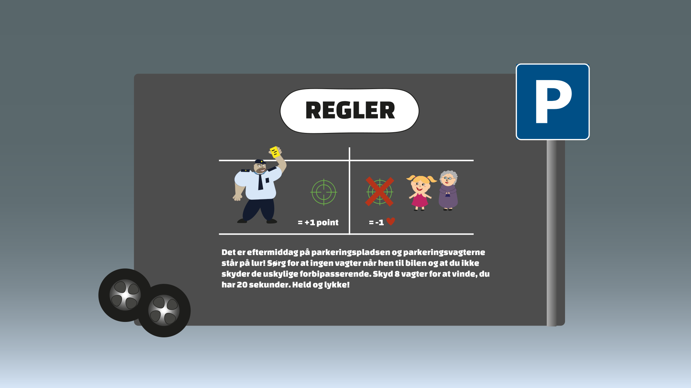

Idé
Spilkoncept
I mit spil Parking Patrol er jeg blevet inspireret af irritationer fra hverdagen, nemlig når man får en parkeringsbøde. Jeg har ud fra dette fantaseret mig frem til et skydespil hvor man skal skyde parkeringsvagter. I selve spillet sidder en lille dreng og venter på sin mor der er inde og handle i Netto. Parkeringsvagterne står på lur og det er drengens opgave at skyde alle parkeringsvagter der kommer hen mod bilen. Civile (en gammel dame eller pige) kommer også forbi og dem skal man ikke skyde. Reglerne er beskrevet mere simpelt herunder.
Inspiration
Jeg har valgt at mit stil-udgangspunkt skal være Vector Art. I forhold til karakter/figurdesign havde jeg en idé om at der skulle være en tydelig forskel på de onde og gode karakterer, da det er dem der er det vigtigste i mit spil. Her tænkte jeg overordnet at bruge asymmetri i mine figurer, men også lidt baby bias. Blandt blev mine gode figurer være tegnet i en Bouba stil og runde former ligesom Hayday karaktererne. Min onde figur (parkeringsvagten) blev tegnet stor og firkantet ligesom de to skurke på billederne nedenunder, som jeg har fundet fra en film og et spil. I formgivningen af mit spil og figurer har jeg overordnet benyttet mig af runde og bløde former der er computer-genereret. Min tanke bag dette var at udvikle et skydespil der ikke blev for drabeligt, her er de bløde former nemlig med til at sørge for dette og give en ”bouba” følelse.
Dokumentation
Figurdesign
Titelskærm proces

Spilskærm proces
Aktivitetsdiagram og State Machine
Farver og typografi
Changa one
Font-family: Changa One
Verdana
Font-family: Verdana, Font-weight: 600/Bold